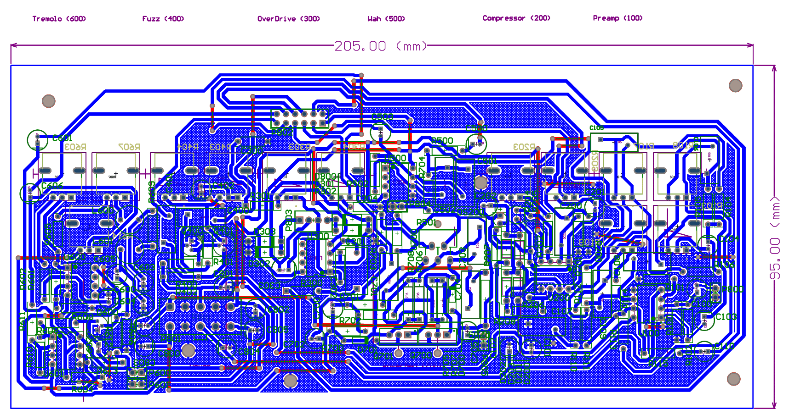
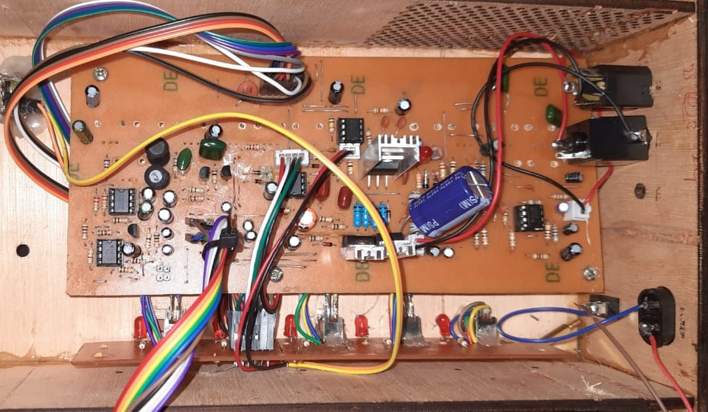

Multi-effect Guitar Pedal
The Guitar Pedalboard is a modular signal processing system designed for instruments like electric guitars and violins. The hardware architecture features a multi-stage signal chain, beginning with a preamplifier and tone controller for frequency management (bass, mid, and treble). It incorporates a dual-rail power supply providing ±5V, ±12V, and ±18V to drive the analog circuitry and a final power amplifier stage for output.
The system integrates six primary analog effects: Compressor, Wah, Overdrive/Distortion, Fuzz, Tremolo, and a Tone Controller. Each module was designed and verified through simulation and breadboard testing to ensure specific audio characteristics, such as consistent loudness via the compressor and rhythmic amplitude modulation via the tremolo. The final implementation involved custom PCB design, switchboard routing, and a dedicated enclosure to house the complete signal chain.
Enclosure
Enclosure of the pedalboard made with laser cut wood
PCB design
Single layer PCB design for the pedal
PCB
Pedal fabricated on a locally manufactured PCB